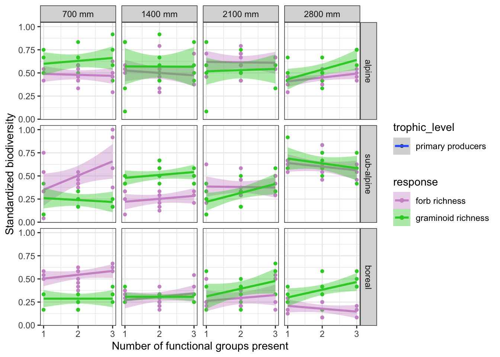
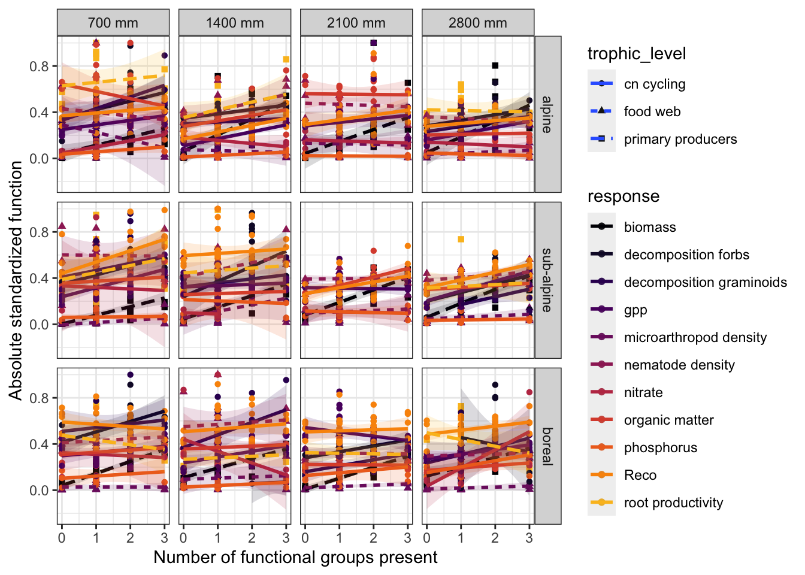
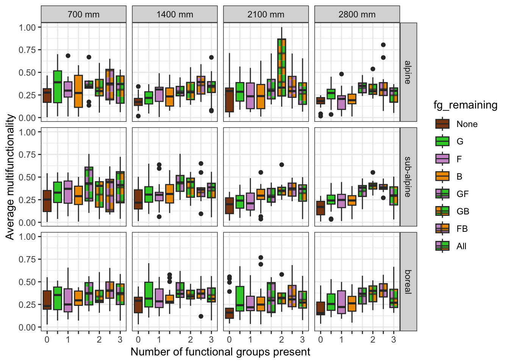

Plant functional group affect on multifunctionality
Abstract
Climate change threatens biodiversity in plant and soil communities with consequences for key ecosystem functions and services. Predicting how biodiversity loss affects multiple ecosystem functions (i.e. multifunctionality) has gained traction, but the context-dependent nature of these relationships is poorly understood. Here we disentangle the direct effects of climate from the indirect effects, mediated through biotic interactions on multifunctionality including ecosystem function of the whole plant-soil food web. We use a powerful macroecological experimental approach, by replicating a plant functional group removal experiment across factorial broad-scale temperature and precipitation gradients. We use a multifunctionality approach and assess the effect of plant functional group presence on biodiversity (plants, bryophytes, nematodes, microarthropods, fungi and bacteria) as well as ecosystem functions including biomass, decomposition, carbon and nutrient stocks and dynamics. The results from this study can uncover context-dependent nature of the effect of biodiversity on ecosystem functioning and the contribution of different plant functional groups to specific functions.
Introduction
Biodiversity and ecosystem functions and whole ecosystem approach including plants and food web.
Multifuncitonality approach
Context dependency
Plant functional removal experiments
Here we study the effect of plant functional groups (graminoids, forbs, and bryophytes) on biodiversity and ecosystem functions using a multifunctionality approach.
Methods
Study sites
Removal experiment
Biodiversity and functions measured
Multifunctionality calculations
Data analysis
Results
The effect of plant functional group present on diversity.

